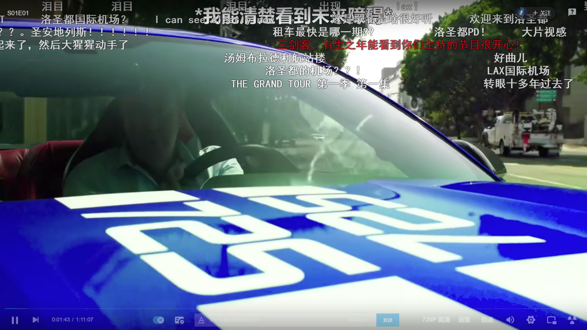
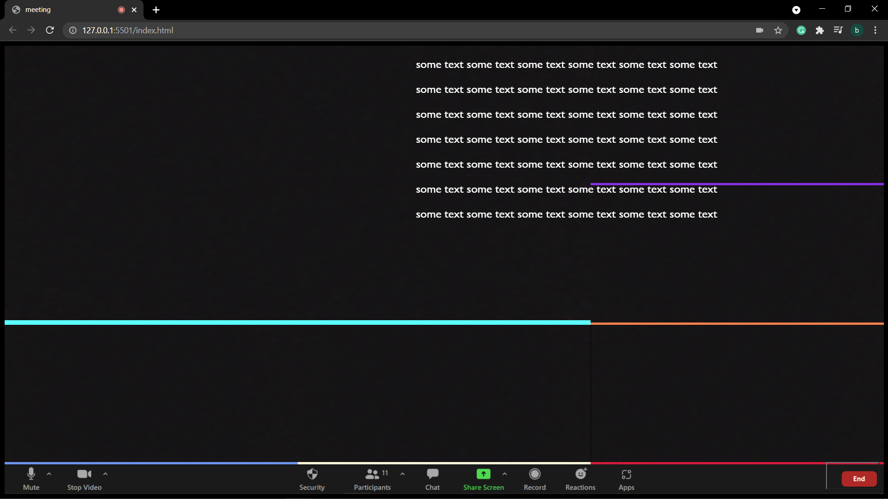
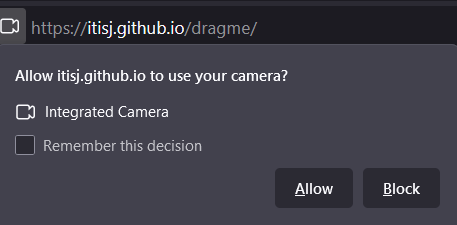
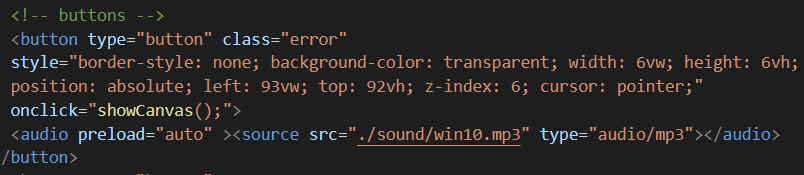
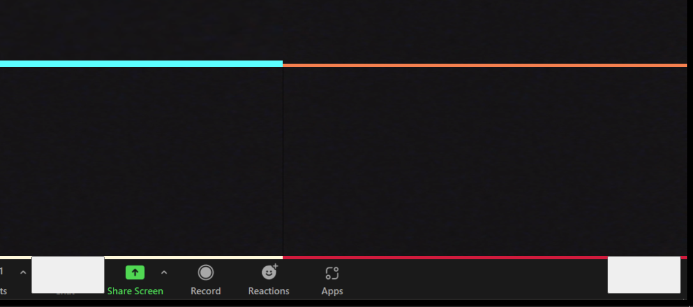
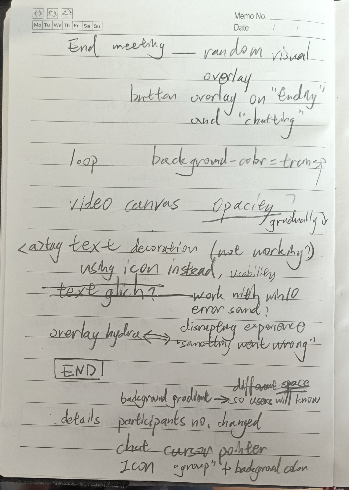
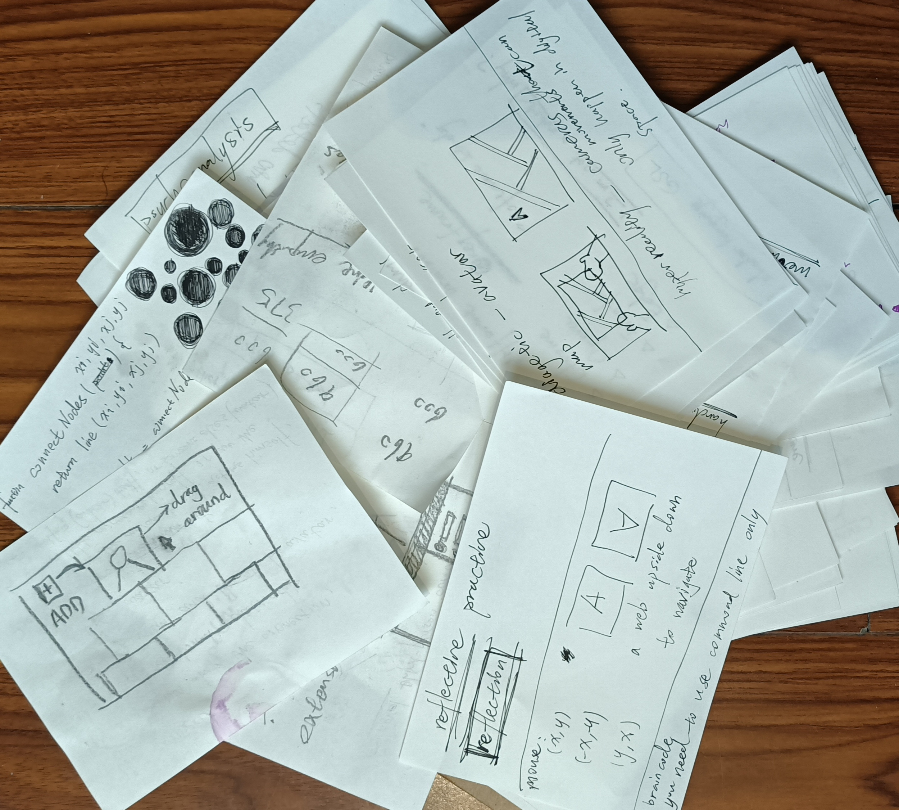
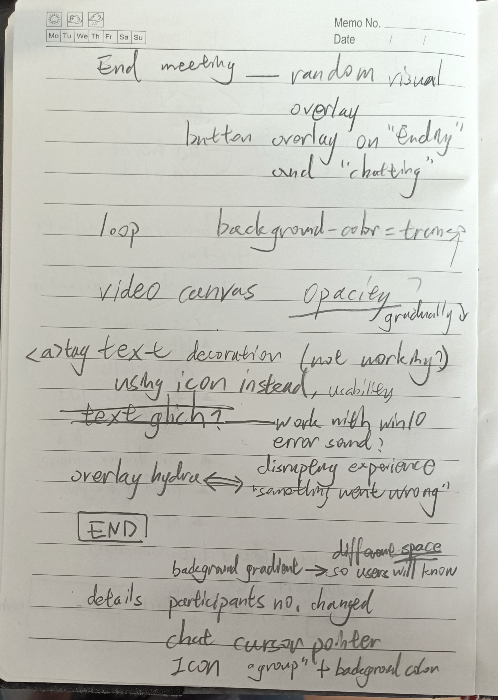
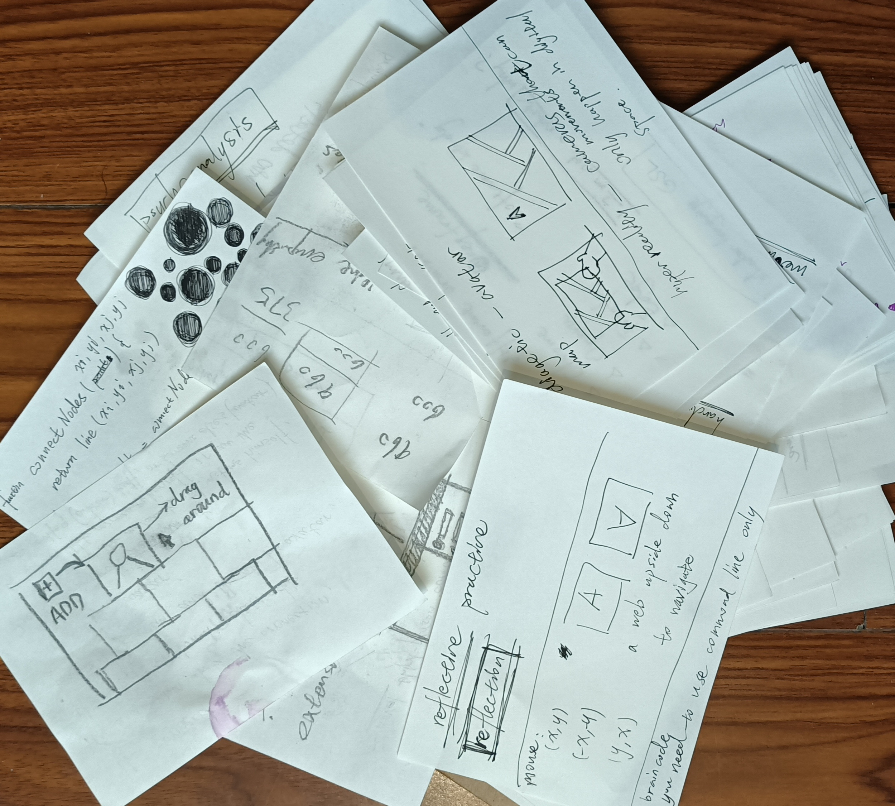

Initial intent
Building upon the last branch, what I am keen to achieve here is a multiplayer system, or at least, some experience similar to multiplayer. My initial attempt was setting up a facetime system. However, conceptually, I think it wouldn’t work for the core idea of my project well, which is about experimenting with one’s representation and identity in the virtual space. “Live comments” catch my attention at this point. It has the sense of multiplayer experience, meanwhile keeps a certain degree of ambiguity. Not like facetime, people who leave comments or messages still stay anonymous in some way. By reading these anonymous messages and reply to them, the user will have the chance to participate in a collective literature creation.
Reflections in action
To begin with, I start to think about which sound to use. I want it to be disrupting to encourager the users or the players to think differently on their representations and places in virtual space, especially in front of this typical online meeting interface
I tried white noise as background, it lacks interaction.
Tone.js would be an interesting technology here since it offers a lot of interaction with sound.
Rethinking which sound is disrupting for a web browser, Windows’ sound effects come to my mind.
First, I tried winXP’s system error sound, it already has the effect that I wanted.
Then, I tried win10’s system error sound and decided that’s the one I’m gonna use.
WinXP’s error sound might be more classic but since most of the users are using win10,
the confusion would be stronger here, they wouldn’t know whether the sound effect comes
from their OS or the web.
I bump into some trouble installing tone.js. Get a bit
confused by the nmp and static ways to install it.
I realize that I make things complicated here, all I need is trigger
sound when one interaction happens, no matter it is mouse move, mouse
down, or page onload. All I need is an event listener here. Tone.js is more
powerful for making instruments and might be too much for a single sound.
Tried mouse hover, mouse click, and on page load to trigger the sound effect. On page load just triggered once, and on mouse hover is overly responsible. I decided to use mouse click as the event listener.
I was struggling to build up a multiplayer system, and get stuck with technologies like WebRTC and PHP. It might be not enough time to do an actual multiuser system.
Trying to think of another to achieve a similar experience. Web browsers’ built-in notification system caught my attention here. Along with css animation and random function in javascript. It can be a way to fake that multiplayer experience see demo site here
  Used javascript array and random method to get short messages for live comments. For the message “you” posted, I changed its color, and add “You: “ in front of it. I think that’s the necessary feedback for users here. Also, to give users more control, and to create more possibilities for the virtual space, I made css animation paused while the mouse hovering on.


Button for “chat” and “end”, changed cursor to pointer, which indicates there are interactions here, and visually, basically made the buttons transparent.
 
Add background iterations by changing color gradient, so that users would
know it’s a different virtual space when jumping to the next page.
Same with the end button, each page applies a different visual overlay.
Add a link icon to the hidden back-to-start option, make it more apparent for users.
Changed participants to 11 using photoshop.
Reflections on action
I’m glad to achieve that multiplayer effect finally, even if it is “fake”. Also, I haven’t considered sound design seriously in my previous branches, it can be world-changing, even just with a single sound. Sonic space would be an important aspect to consider for my future works. Inspired by last week’s class, designing a web brush/pen would be a direction for me to explore since there are plenty possible space out there.
From Patrick’s presentation, I’m a bit surprised how detailed the reflection-in-action is and how it focused on small pieces. I was thinking these small details were not really worth recording, and general ideas should be more focused on. Until I realize I am kind of unconsciously doing a similar thing. I always like to keep small notes while doing my work, maybe a flash of an idea, a small style change, a design constrain for the project, and so on. Not sure how many people still keep notes on paper, might not be very environment-friendly, I just found it hard for me to do notes digitally. My expression might be not accurate, not really not worth recording, writing them down properly just never come to my mind. It’s a good starting point, I might do that more consciously for future works.
 


